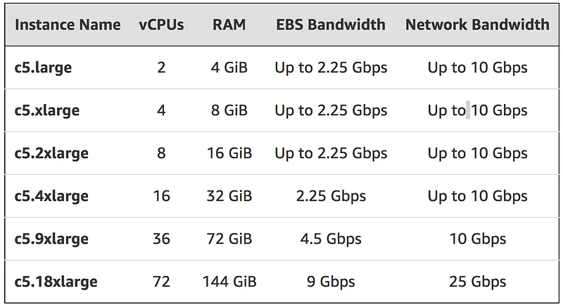

C5 instances: fast… and then some
In a previous post, I used the largest i3 instance to build FreeBSD 11 in 10 minutes and 54 seconds.
i3.16xlarge instance, 64 vCPUs, 488GB RAM, 8x1900GB local NVMe storage, 20Gb networking
This was a massive improvement over the i2 family, thanks to super-fast NVMe storage. Now that the c5 family is available, let’s see if we can do even better :)
The C5 family
As usual, c5 instances come in different sizes.

Let’s pick the largest one and see how the new Intel Skylake architecture performs. For storage, we’ll use a 100GB EBS SSD volume with 5,000 IOPS.
Building FreeBSD
We’ve done this a few times already, here are the commands. Let’s start 4 threads per vCPU, hopefully this will be enough to keep them busy.
8 minutes and 30 seconds. Holy hell. 21% faster than i3. For reference, the same test on the largest c4 (c4.8xlarge) takes 11 minutes and 32 seconds. The c5 instance is 26% faster in this case.
Thanks for reading and happy testing.
This post was written in 15 minutes in London. Both far beyond the sun and at full speed, then. Yngwie-style \m/